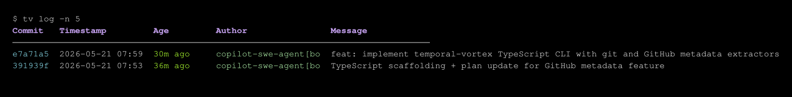
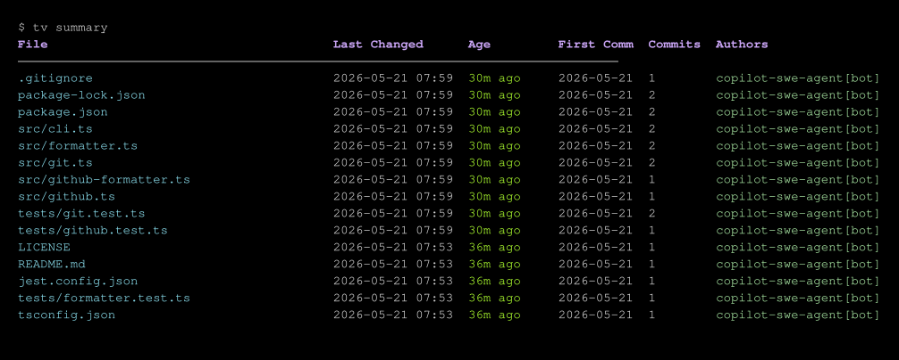
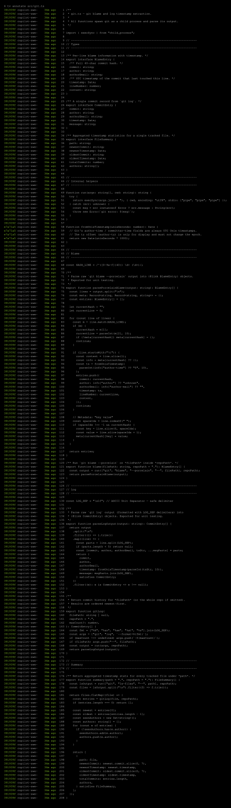
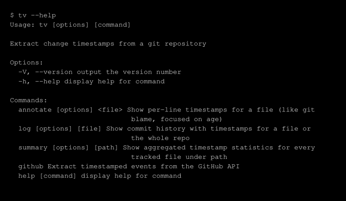
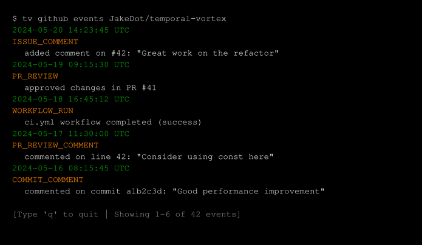
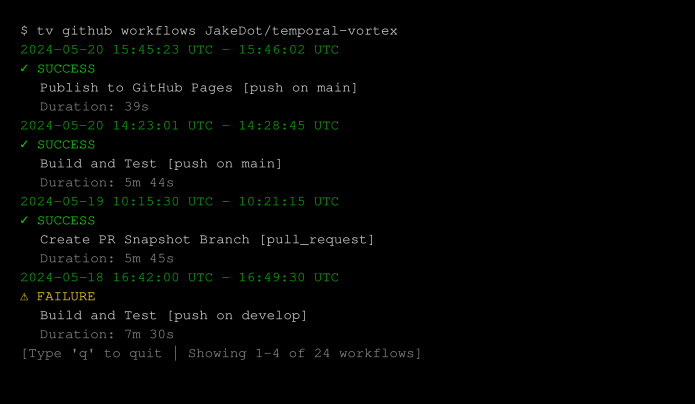

Features
📜 TV Log
Show commit history with color-coded age timestamps
📊 TV Summary
Per-file timestamp statistics (newest change, first commit, commit count, authors)
✏️ TV Annotate
Per-line blame with age-colored timestamps, similar to git blame
🐙 GitHub Integration
Timestamped events (comments, reviews, workflow runs) and GitHub Actions workflow analysis
Commands
Quick Link: View detailed command reference →
Git Commands
tv log [file]
Show commit history with color-coded age timestamps.

tv summary [path]
Show per-file timestamp statistics (newest change, first commit, commit count, authors).

tv annotate <file>
Per-line blame with age-colored timestamps, similar to git blame.

tv --help
Display help information for all commands.

GitHub Commands
Requires a GITHUB_TOKEN env var or the --token flag.
tv gh events <owner/repo>
Show all timestamped events from the GitHub API including comments, reviews, and workflow runs. Supports filtering by event kind (issue_comment, pr_review_comment, pr_review, commit_comment, workflow_run).

tv gh workflows <owner/repo>
Show GitHub Actions workflow runs with agent start and end timestamps, including workflow name, status, and duration.

Installation
npm install -g temporal-vortexAfter installation, you'll have the tv command available globally.
Developer Setup
Git Hooks
This repository uses git hooks to enforce commit message standards. Running npm install automatically configures your git repository to use the .githooks/ directory for commit hooks on all platforms. If automatic setup fails, run the setup command manually:
git config core.hooksPath .githooksNote: This modifies your local git configuration (core.hooksPath) only for this repository and does not affect other repositories. You can manually undo this with git config --unset core.hooksPath.
Commit Message Hook
The commit-msg hook rejects commits with the placeholder message "Initial Plan" to ensure meaningful commits are made to PRs. If you encounter this error, amend your commit with a real message:
git commit --amend -m "Your meaningful commit message"Checking Out PRs
You can check out any pull request using one of these methods:
Method 1: Clone/fetch a snapshot branch (easiest)
Once a PR has a real commit (after the "Initial Plan" placeholder), a snapshot branch is automatically created at snapshots/pr-<PR-NUMBER>:
git fetch origin snapshots/pr-<PR-NUMBER>
git checkout snapshots/pr-<PR-NUMBER>Or clone directly:
git clone --branch snapshots/pr-<PR-NUMBER> <your-repo-url>Method 2: Fetch PR directly using git refs (always works)
git fetch origin refs/pull/<PR-NUMBER>/head:pr-<PR-NUMBER>
git checkout pr-<PR-NUMBER>Screenshots
Visual demonstrations of temporal-vortex commands are available in the docs/screenshots directory.
Regenerate Screenshots
npm run screenshot